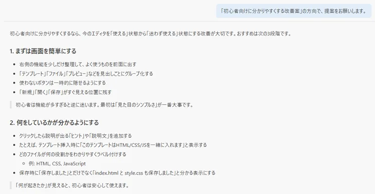

はじめに
「VS Code（Visual Studio Code）」は、世界中のエンジニアやWebクリエイターに愛用されている高機能なコードエディタです。HTML/CSSやJavaScriptはもちろん、あらゆるプログラミング言語に対応しており、シンプルなWebページ制作から本格的なソフトウェア開発までこれひとつで完結します。
📷 VS Codeのチュートリアル画面

さらに、近年ではAIアシスタント「GitHub Copilot」との強力な連携によって、AIが編集のアドバイスをしてくれたり、コードを直接修正してくれたりと、開発効率が劇的に向上しています。
VS Codeは圧倒的な拡張性と自由度の高さが魅力ですが、それゆえにとっつきにくいという側面もあります。この記事では、Web制作の視点からVS Codeの長所と短所、そして導入時の壁をクリアして快適に使うためのステップを解説します。
インストールと初期設定の壁
VS Codeが初心者に少しハードルが高いと言われる最大の理由は、「インストールした直後は最低限の機能しかないため、自分の目的に適した環境を整える（初期設定する）必要がある」という点です。
1. 日本語化の手間
公式ページからVS Codeをダウンロードしてインストールした直後は、画面の表示がすべて英語です。
起動時に日本語化を促すポップアップが出ることもありますが、出ない場合は拡張機能（プラグイン）の検索画面で「Japanese Language Pack」を探してインストールする必要があります。
日本語化した後もエラーメッセージや詳細な設定項目の一部は英語のまま残るため、英語が苦手だと「何かエラーが起きているようだけど、何が原因かわからない」といった状況に陥りやすい点も注意が必要です。
2. Web制作に必要なプラグインの個別導入
VS Codeはデフォルトだと非常にシンプルな機能に絞られています。「Brackets」や「Phoenix Code」のように、最初からWeb制作に必要な機能が揃っていてインストール後すぐに作業できるエディタに慣れていると、自分でプラグインを検索して揃える作業でかなり面食らうことになります。
Web制作で導入しておきたいおすすめプラグイン
VS CodeをWebページ制作用エディタとして快適に使うために、まずは以下の基本プラグインを導入するのがおすすめです。
| プラグイン名 | 機能と特徴 |
|---|---|
| Live Server | ローカルサーバーを立ち上げ、コードを保存すると同時にブラウザへ自動反映してプレビューを表示する（必須級！） |
| Prettier - Code formatter | HTML、CSS、JavaScriptのコードを自動で整形してくれる |
| Auto Rename Tag | HTMLの開始タグを書き換えると、閉じタグも自動で書き換えてくれる |
| Error Lens | コードのエラーや警告をその場で表示してくれる |
初心者の救世主！GitHub CopilotによるAIアシスト
「初期設定で何を入れていいか分からない…」と迷ったときに強力な助けとなるのが、VS Codeに連携できるAIアシスタント「GitHub Copilot」です。
GitHub Copilotと連携しておけば、サイドバーのチャットで「HTML/CSSでWebサイトを作りたいのでおすすめのプラグインを教えて」と質問するだけで、必要なプラグインや設定方法を丁寧に解説してくれます！
セットアップ手順
- GitHubアカウントを作成する（無料＆メールアドレスのみで登録可能）
- VS Codeの「拡張機能」タブから「GitHub Copilot」を検索してインストールする。
- 画面の指示に従い、自分のGitHubアカウントでログインして連携する。
GitHub Copilotには月間の利用枠内で使える無料プランも用意されているため、まずは気軽にお試し感覚で導入できます🐾
優秀すぎるAIアシスト機能の魅力
個人的にVS Codeの最大の目玉機能だと思っているのが、この「GitHub Copilot」との連携による強力なアシスタント機能。文面によるアドバイスやコードの出力にとどまらず、AI自身がコードを編集することで作業効率を劇的に向上させてくれます。
📷 ツール制作のアドバイスもしてくれるGitHub Copilot

1. エディタ上のコードを直接編集してくれる
一般的なチャット型AIでもコード生成は可能ですが、その場合は「ブラウザで出力されたコードをコピペして使用する」という形になるため、貼り付けミスなどのヒューマンエラーが起こりがちです。
一方、VS Code上のGitHub Copilotに「このコードをレスポンシブ対応にして」「ここにボタンを追加して」と依頼すると、エディタ内のコードを直接書き換えて差分を表示してくれます。ワンクリックで適用・拒否を選択できるため、作業効率が圧倒的に向上します。
2. 履歴の復元やアイデアの分岐（ブランチ）が容易
AIに編集してもらった結果がイメージと違った場合でも、チャットの履歴を辿って以前の状態へ簡単に復元できます。
チャットの会話内容を分岐（ブランチ）させることもできるため、「現在のコードはそのままキープしつつ、別案として新機能をテスト的に追加してみる」といった実験的な実装も、安全かつスムーズに行えます。
まとめ
初期設定やプラグインの選定など、使い始めるまでに手間がかかるVS Codeですが、一度環境を整えてしまえば豊富な拡張性と強力なAIアシストによって抜群の快適さを提供してくれます。
「これからWeb制作を本格的に始めたい」「AIの力を借りて効率よくコードを書きたい」と考えている方は、ぜひVS CodeとGitHub Copilotの組み合わせを試してみてくださいね！